The New Journey: From VinID → OneU
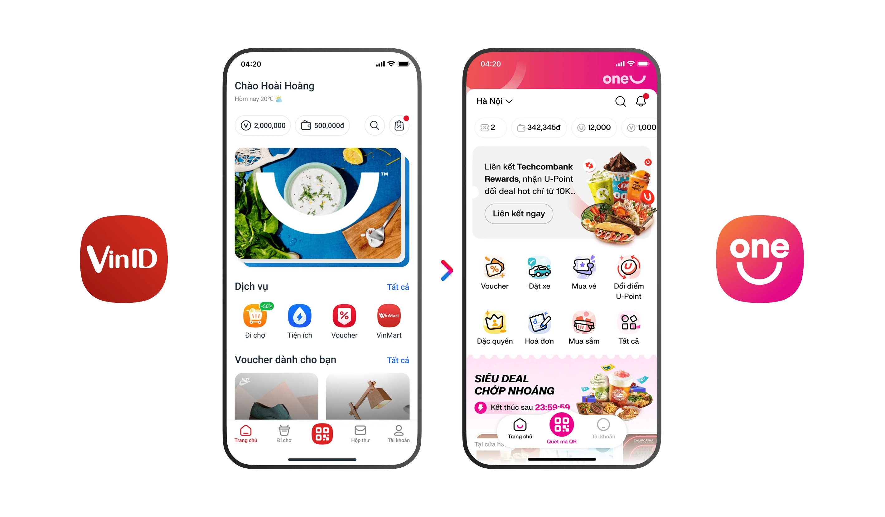
Project Overview
OneU is the strategic transformation of VinID into a lifestyle and loyalty platform — becoming an extended digital arm of Techcombank. The goal is to build a connected ecosystem that integrates reward points, payments, anders into a unified journey of value for both existing (ETB) and new (NTB) customers.
Objective:
To create a cohesive lifestyle platform that strengthens the relationship between users and Techcombank through seamless point redemption, payments, and exclusiveers — all in one place.
Challenge
VinID was previously perceived as a limited “points – redemption” super app with little emphasis on lifestyle integration or banking ecosystem synergy.
Users often felt:
- The experience was outdated and uninspiring.
- The lack of account connectivity reduced personalization.
- The interface did not reflect the modern lifestyle image Techcombank wanted to convey.
Key Goals for OneU:
- Attract and retain users through a more engaging, benefit-driven experience.
- Unify the two platforms — Techcombank (transactions) and OneU (lifestyle) — into “one journey.”
- Enable multi-channel point integration (e.g., T-Pay, Wealth ID, Merchant...).
Design Process
This project was a cross-functional effort that brought together teams from Marketing, Branding, Product, and Visual Design. We aligned early to define a unified direction — not just for the app, but across all customer touchpoints — ensuring consistency in both experience and brand expression.
From Brand Core to User Touchpoints
Find the New OneU Characteristic
We aligned cross-functional teams to define OneU’s personality — dynamic, youthful, and value-focused — as the foundation for all design decisions.
Redesign the Visual & Experience System
We revamped the entire visual and experience system, from color, typography, and iconography to personalized, dynamic, and benefit-led UX principles.
Apply Across Every Touchpoint
We applied this personality consistently across features, UI flows, and external communication — ensuring every user interaction felt distinctly OneU.
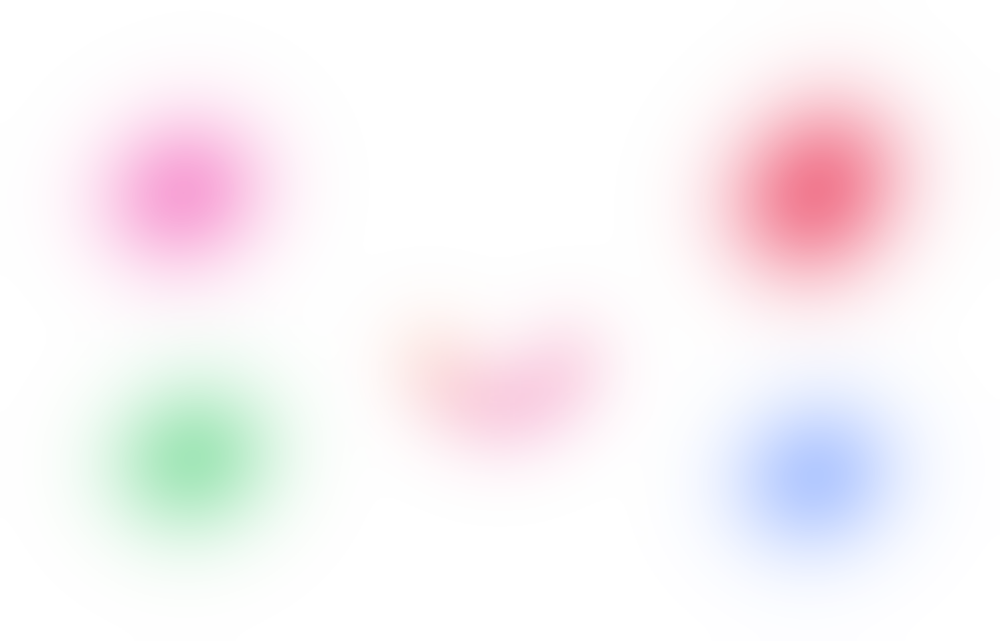
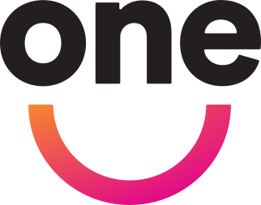
Dynamic
Feed me something fresh and exciting every time I open the app
Benefit-led
Bring me real value — great deals, points, and easy rewards
Trendy
Feeling trendy, modern, and match my lifestyle vibe
Personalized
Just suggest what fits me best
Visual Direction & Design System
This app revamp marked a complete overhaul of our visual and UI design system. Guided by our brand personality pillars, we crafted a fresh and trendy visual identity — one that feels dynamic and fully personalized across every touchpoint
“Dynamic” is the core design philosophy behind OneU
We wanted everything on the platform — from content to products — to feel alive and constantly evolving. That meant our visual elements had to move with the same energy.
Take the connected app icon set as an example.
We moved away from the old static, minimalistic style and embraced a more expressive, fluid visual language. Each icon was redrawn with a unique perspective, as if captured mid-motion. Supporting elements were added to create depth and enhance the feeling of movement — turning static visuals into living moments.
Shout-out to our two amazing visual artists behind OneU’s icon set. Their creativity and attention to detail brought our dynamic design philosophy to life — crafting a bold, expressive icon system that truly moves with the brand.
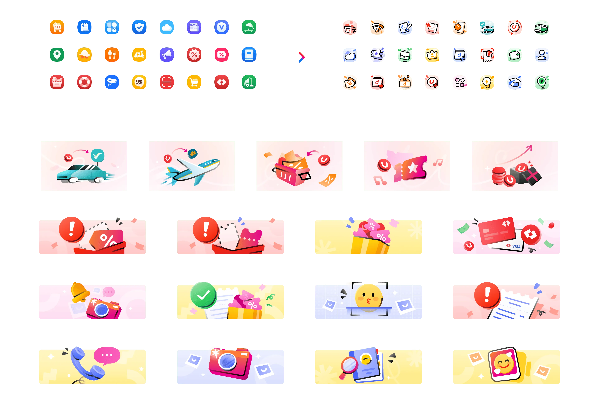
Before
And after
Illustration: Connected app & in-app Banner by Oneu’s artist
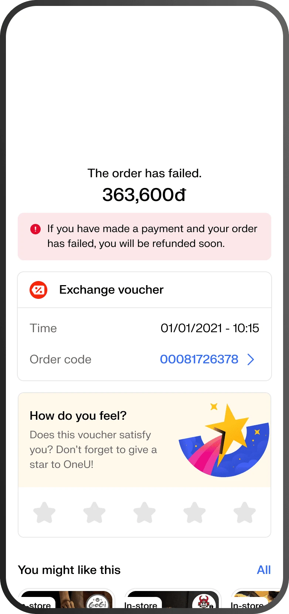
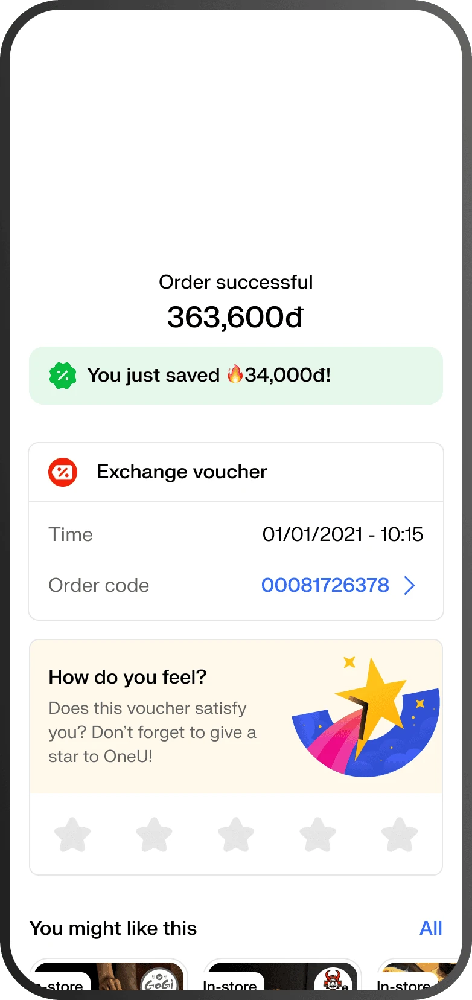
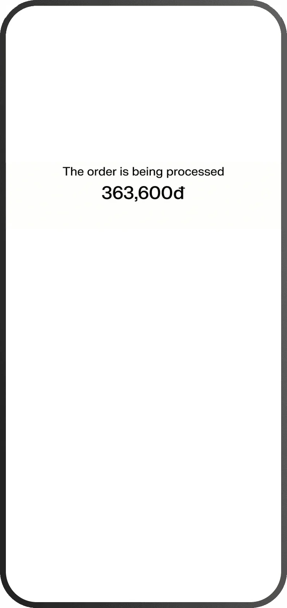
Let’s talk about my favorite part: the Design System
The VinID Design System was once well-known within the local design community.
However, as the product evolved, so did the needs — and the existing system could no longer keep up with the day-to-day demands of OneU’s Product Designers.
The app revamp presented the perfect opportunity. We reimagined and launched a brand-new Design System, built from the ground up based on real usage insights and habits gathered from OneU’s internal design team.
The result: a more flexible, scalable, and designer-friendly system that powers both consistency and creativity.
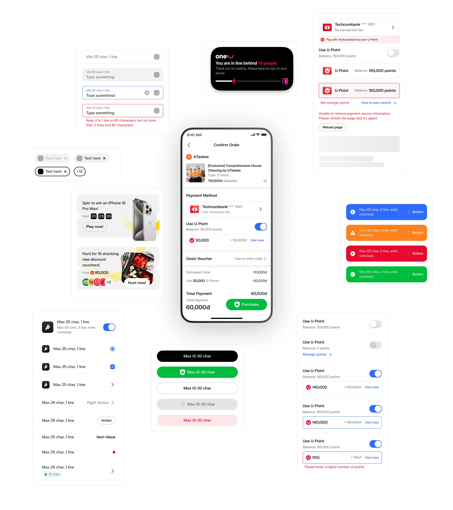
02Personalized & Dynamic
To create a smooth connection between the banking app (Techcombank Mobile) and the lifestyle app (OneU), we synced the user’s membership level from Techcombank and showed it at the top of OneU’s home screen.
This small detail helped make the experience feel more personal.
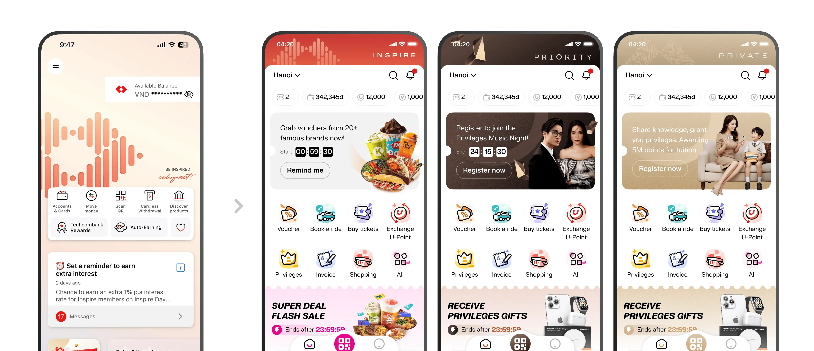
Techcombank Homepage OneU HomepageBased on the key visuals (KV) of each Techcombank membership tier, we adapted and integrated them into the OneU homepage.
But we didn’t stop there — the entire content and product experience within the app also changes dynamically according to the user’s tier, ensuring it aligns with their persona and needs.
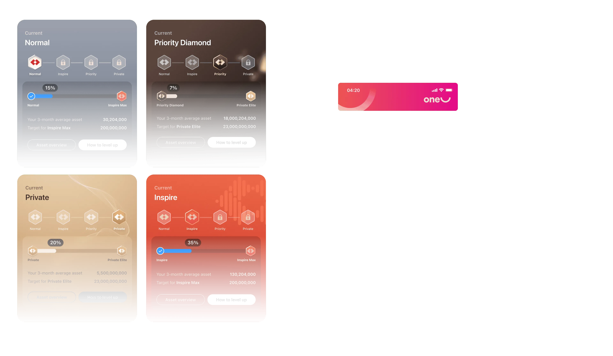
Together with Dynamic Engagement Content (DEC) — a dynamic alternative to static, boring banners — we designed AI-powered scenarios to deliver the most relevant and up-to-date information to users every time they open OneU.
Instead of showing one-size-fits-all content, DEC adapts in real time to user data, habits, and context — making the experience feel fresh and personal on every visit.
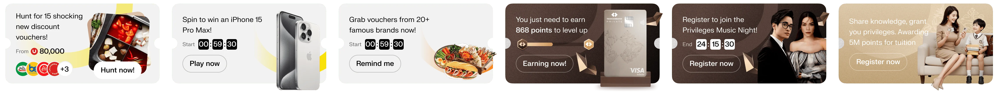
Benefit-led & Trendy
VinID was originally designed for a more mature audience — adults with families — so its visual style leaned towards safety, seriousness, and a somewhat outdated look and feel.
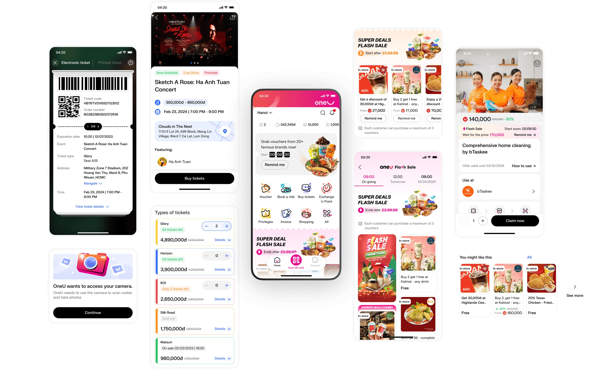
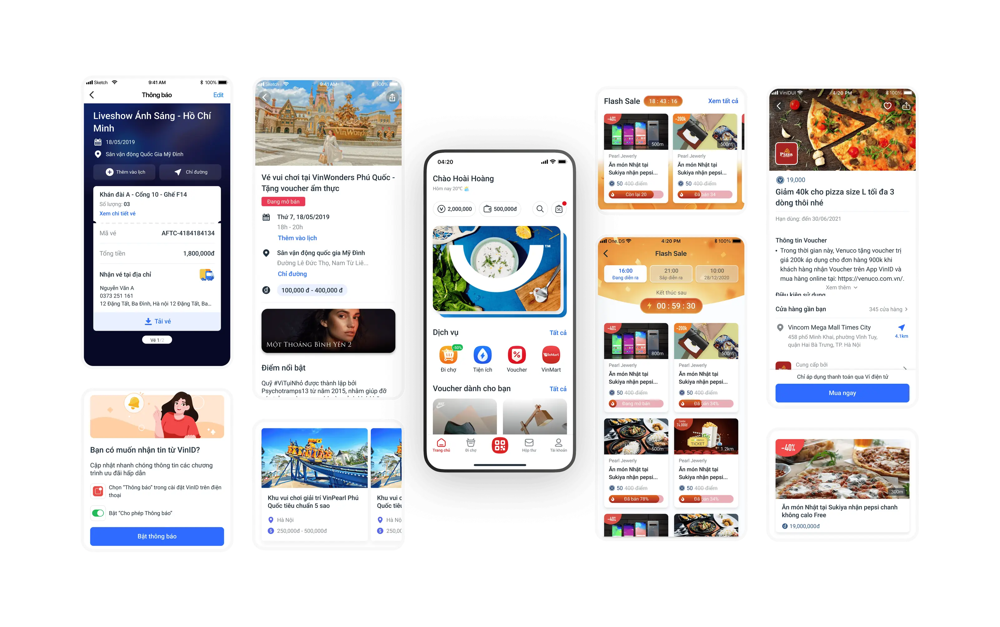
Before: VinID App Design
After: OneU App Design
As we shifted toward a lifestyle-focused direction with OneU, it became clear that we needed a fresh, modern face — one that feels younger, trendier, and more dynamic to better connect with our new target users.
Impact & Results
Increase
>12%
voucher redemptions within the first 2 months after redesign
Get total
~25%
linked account conversions driven by Voucher U-Point flow
Achieved
>15% CTR
for Dynamic Engagement Content, far exceeding the standard ads benchmark of ~2%